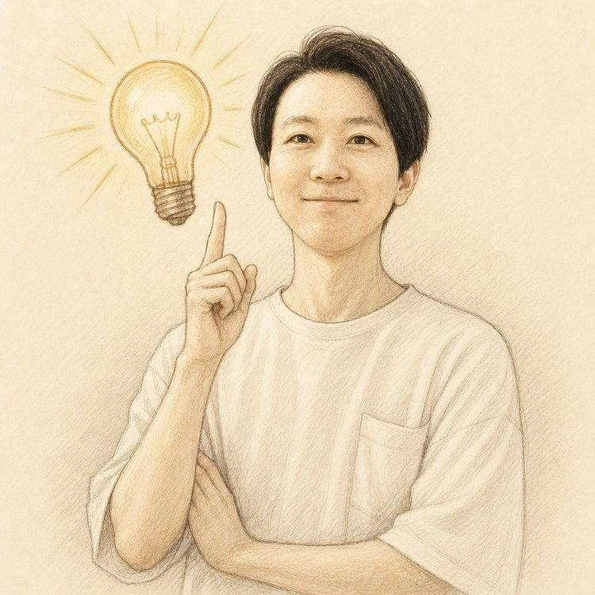
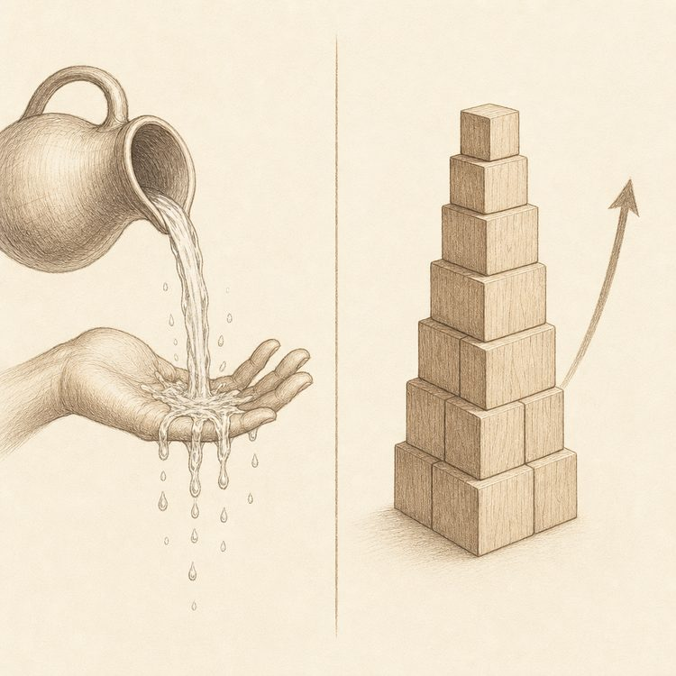
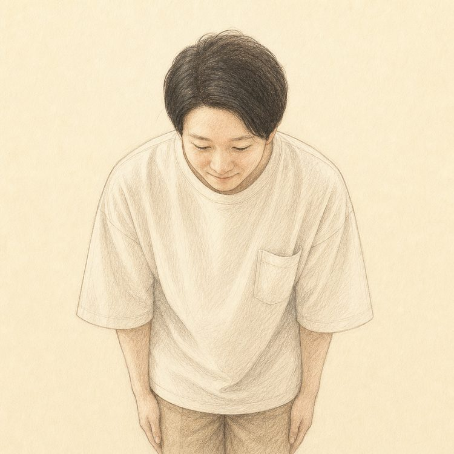
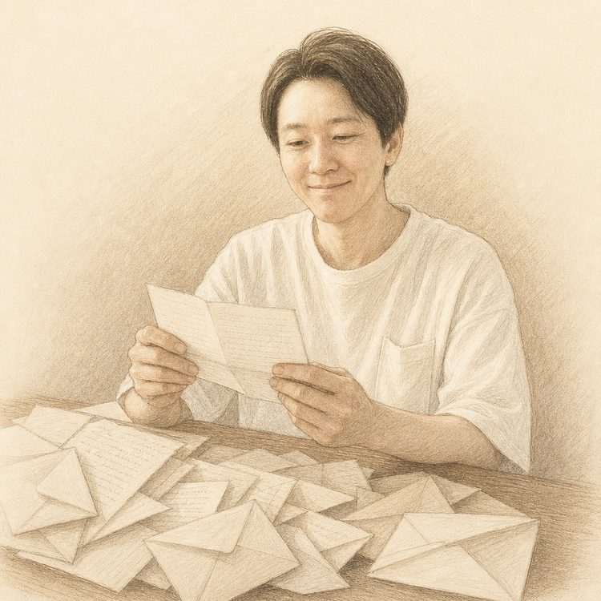
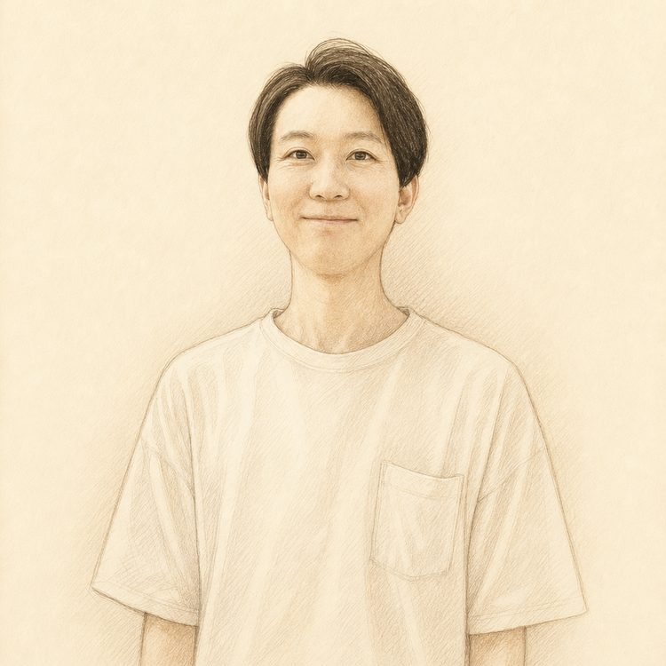

こんにちは。
私は在宅副業をはじめて人生が変わった、じゅんと言います。
初めに言っておきますが、人生が変わったというのはいい方向にだけではありません。
我ながらバカだったなと思うのですが、
副業に7回も失敗して、副業でどん底を味わったこともありました。
でも今は、家に居ながら、会社に縛られることなく、
毎月妻と旅行に行けるだけの収入を手にできています。
いま私は、昔の私と同じ遠回りをする人を一人でも減らしたい想いで
「積み上がる副業」というテーマで発信しています。言葉の意味はあとでわかるのでお待ちください。
今回お話しするのは、私が重ねた7回の失敗と、
その過程で30以上の在宅副業を片っ端から調べ尽くしてわかったことです。
私が実際にやって、実際にダメだった副業を全部書きます。
1ヶ月まじめに続けて、手元に残ったのは数百円。
時給に直すのが怖くなって、そこでやめました。
売れる読みで仕入れた商品が、そのまま部屋を占領。
在庫は1つも減らないのに、カードの請求だけは毎月きっちり届きました。
1文字0.5円。3,000文字書いて1,500円。
下調べの時間まで含めたら、時給は最低賃金1000円を割っていました。
「これからは動画だ」と聞いて飛びつきました。
スクール代を取り戻すより先に、単価の安さと締め切りに潰されました。
「放っておいても増える」と言われて、高いツールを買いました。
増えたのは残高ではなく、マイナスのほうでした。
半年かけて100記事。
その結果、発生した報酬は月200円ちょっとです。
ようやく収入と呼べる金額になった、と思った矢先。
先方の判断ひとつで契約が切れて、翌月の入金はまたゼロになりました。
7回やって、7回とも空振り。
ただ、7回目にしてようやく腑に落ちたことがあります。
私がずっと結果を出せなかったのは、頑張りが足りなかったからではない。
「手を止めたらゼロに戻るもの」ばかりを選び続けていたからです。
ここ数年で、給料以外の収入源を持ちたいという人が一気に増えました。
スマホ1台で始められるものだけでも、数え切れないほどあります。
だからこそ、どれを選べばいいのか判断がつかないまま、
私と同じ遠回りをする人が、きっと多いのだと思います。
8回目の失敗をするわけには
いかない。
そう思って私は、
目についた在宅副業を手当たり次第に調べることにしました。
会社に任せたわけでも、誰かの記事を並べ替えただけでもありません。
7回すべった本人が、次こそ外したくない一心で、
1つずつ中身を見て、比べて、ノートに書き出しました。
続くか続かないかを
分けているのは、
「積み上がるかどうか」だった！？
100以上ある中から全部というのは流石に無理だったので、30個に絞って調べました。
そこで見えてきたのは、次の3つです。
（③は私が身をもって証明しました。失敗⑤がそれです）
稼げそうな副業を始めてはみたものの、一時的な収入で終わってしまった。
本業が立て込んだ途端に、手が止まってしまった。
そんな経験のある方も、いるのではないでしょうか。
動画編集やブログ、せどり、ポイ活といった定番どころに挑んだ人のうち、
9割は形にならないまま終わると言われています。ご存じでしたか？
私も、その9割の側に7回並んでいました。
うまくいかない原因は、だいたいこの3つに集約されます。
1. 先行者で席が埋まりきった、旬を過ぎた副業
2. 納品したらそこで終わる、労働と時間を交換するだけの副業
3. 仕入れ・在庫・ツール代を先に自腹で払う、持ち出しが前提の副業
結局のところ、結果を分けているのは選び方です。
労働と時間を交換するやり方でもない。
当たり外れに賭ける相場の世界でもない。
「自分のアカウントそのものを資産に育てて」
動いていない時間にも収入が生まれる形をつくること。ここに尽きます。
収入を長く残したいなら、いま伸びている領域で、
やった作業がそのまま蓄積されて、しかも元手のいらないもの。
この条件を満たす必要があります。

作業が積み上がって
自分のアカウントが資産になる副業
それが
インスタ
×アフィリエイト
でした。
労働と時間を差し出すのではなく、
自分が動いていない間にも収入が発生する状態をつくること。
狙うべきなのは、流れて消えるフロー型ではなく、残って効き続けるストック型です。
ただ、私がこれを選んだ本当の理由は、利益率でも在庫がないことでもありません。
家族との時間を削らずに続けられたから、それだけです。
7回外した私が、8個目にしてようやく行き着いた答えでした。
人の実績を並べる前に、まず私の話をさせてください。
私は元銀行員。
サービス残業は月80時間、残業代はゼロ。月収は20万円。
10年勤めて、これでした。
きつかったのは、お金だけじゃない。
体は正直でした。
神経調節性失神で、倒れたこともあります。
決定的だったのは、10年上の先輩の給料を知った日。
「10年頑張っても、ここか」
その瞬間、目の前がすっと暗くなったのを今でも覚えています。
そこからは、とにかく必死。
手当たり次第に副業へ手を出しました。
さきほどの7つのうち、いちばん深く沈んだのは2つです。
投資系は、詐欺まがい。残ったのは90万円の借金だけ。
せどりでは、仕入れた古着で家の一部屋が埋まり、
妻から「もう限界」と本気で怒られました。
「仕事も勉強も副業も、自分は何をやってもだめ」
「家族のために始めたはずの副業で、その家族まで苦しめている」
「離婚されても文句は言えない、最低な人間だ」
あの頃は、本気でそう思っていました。
そんな私を救ってくれたのが、インスタ×アフィリエイト。
正直、うまくいくとは思ってなかったです。
ただ、「何もしなければ、5年後も10年後もこのまま」。
そっちのほうが、よっぽど怖かった。
これで最後にする。そう決めて始めました。
使った時間は、通勤電車と昼休みと、寝る前の布団の中だけ。
それまで何となくSNSを眺めて溶かしていた時間を、
そのまま置き換えただけです。
結果は、こんな感じ。
まさか、ですよね。
何度見返しても、まだ自分のことだと思えません。
でも、いちばん忘れられないのは、月7桁を超えた日じゃない。
初めて数百円が入った、あの通知です。
「え、本当に売れた…！？」
何度も画面を開き直しました。
自分がゼロから作り上げた仕組みで、初めてお金をもらえた。
あのときの達成感は、今でも鮮明に残っています。
そしてこのとき、私のフォロワーは、まだ100人台。
効いていたのは数ではなく、どこで発信するかのほうでした。
7回外したのも、8個目で変わったのも、原因は同じです。
選ぶ場所を、間違えていただけでした。
※記載の数値は私個人の実績であり、成果を保証するものではありません。効果には個人差があります。
ここまで読んで、
「インスタ？ もうやってる人だらけでしょ」
「今から始めても、ライバルが多すぎるのでは？」
そう思った方もいると思います。
その感覚、正しいです。
確かに、インスタで発信している人の数は多い。
毎日のように新しいアカウントが生まれています。
でも、ご安心ください。
見るべきなのは、プレイヤーの数ではありません。
美容、ダイエット、筋トレ、恋愛、貯金、節約、投資、
子育て、料理、片付け、ペット、旅行、資格、転職、
一人暮らし、更年期、腰痛、睡眠、白髪、老眼、ゴルフ、車中泊・・・
いま挙げたのは、ほんの一部です。
しかも、この1つ1つが、さらに枝分かれしていきます。
たとえば「ダイエット」ひとつ取っても
・・・と、いくらでも細かく分かれます。
人がひしめいているのは、「ジャンルの入口」だけなんです。
そこから一段奥に入った瞬間、誰も座っていない席が、普通に空いています。
私が7回外した副業は、どれも
「同じ土俵に上がって、同じことを、もっと安く引き受ける」
という戦い方しかできませんでした。
だから、動いても動いても報われなかった。
でもインスタは違います。
だから、後発でも問題ない。
だから、初心者でも結果が出せる。
大事なのは、誰よりも早く始めることではありません。
まだ誰も取っていない場所を選ぶことです。
そして、その「選び方」こそが、
同じやり方で月30万を超えた174人が、そろって最初に手をつけていたことでした。

アカウントが育って、反応の取れる投稿の型が1つ決まってしまえば、
あとはその型を回していくだけの作業になります。
同じ型で結果を出した人が、174人以上います。
才能のある誰か一人の話ではない、というのがこの数字の意味です。
家にいながらスマホだけで完結するので、
時間の取りにくい会社員の方や、子育て中の方にこそ向いています。
子どもの寝かしつけが終わった数時間でもアカウントを育てておけば、
それが毎月の収入源として残り続ける
30個を見比べた中で、
「やった分がそのまま自分に残る」と言えるものは、数えるほどしかありませんでした。
その中でもインスタ×アフィリエイトは、
結果の出方が一番ブレず、必要なのはスマホだけ。
知識ゼロの状態からでも入っていける形でした。
しかも今は、AIを使えば投稿づくりの大半を半自動化できます。
私が7回すべっていた頃には、この環境はありませんでした。
正直に言うと、これから始める人がうらやましいです。
人気を集めているWEBライターや動画編集。
響きは今っぽくて格好いいのですが、中身は労働と時間の交換です。
報酬の決まり方も時給ではなく1件いくらの出来高で、
募集されている単価は正直、目を疑うような水準のものばかりです。
これは私が身をもって体験したことです。
どれだけ作業が速くなっても、
1日は24時間しかありません。
そこから先は、物理的に伸ばしようがない。
つまりこの手の副業は、やっていることがアルバイトと変わらず、
最後は体力で殴り合う世界になります。
そして、本業を抱えたまま空いた時間を売り続けるのは、
どう考えても長くは持ちません。
もう一度言います。
仕事を続けながらでもやれて、
動いた分がそのまま自分に残っていく副業。それが
それが、インスタ×アフィリエイトです。
はじめての人でも1つずつ積み上げていけて、
育てたアカウントがそのまま自分の持ち物になり、
そこから収入が生まれ続ける。
7回の失敗で私がぶつかった不満は、これで全部なくなりました。
ごめんなさい、
この先はここに書けません

どういう仕組みでそうなるのか。
そして、さきほどお伝えした「まだ空いているジャンルの選び方」。
誰でも読める場所に書けば、同じ手を打つ人が一日で膨れ上がります。
なのでこの部分は、LINEに来てくれた方にだけ、期間を区切ってお伝えします。
これから始める方に必要なものは、
すべて無料でお渡しします。
LINEから受け取ってください。
7回分の失敗と30個分の調査を全部注ぎ込んだら、無料で配るには惜しい内容になりました！
正直、「これ無料で配って大丈夫か？」と自分でも思っています。
ただ、宣伝が得意なわけでもないので、
必要としている人のところまで届くのか、そこだけが心配です。
ここまで、私が転ぶところから立て直すまでの話をしてきました。
なので今度は、これから始める方の話をさせてください。
ちなみに私の次の目標は、都内にマイホームを建てて、家族とのんびり暮らすことです。
数年前の私なら、鼻で笑っていたと思います。
でも今は、その夢に毎日ちゃんと近づいている。
正直に言うと、こうした毎日を、
7回すべっていた頃の私は1つも信じていませんでした。
「どうせ一部の人の話だろう」と決めつけていました。
でも今、同じことを言う人が、私のまわりに174人以上います。
実際に、私と同じやり方で始めた方から、
こんな声が届いています。
元々会社に不満があってブログやプログラミングを始めたんですが、1年頑張っても全然稼げなくて挫折しました。
始めたのは元々知識のないお金ジャンルで、よそから知った知識をインスタで発信してただけだったんですが、予想外にうまくいきました。
今では会社を辞められてストレスがほぼなくなったのですが、収入が増えたことよりむしろこっちの方が嬉しかったです。
独学で頑張るのではなく、すでにうまくいっている人から早々にやり方を教わったのが成功の秘訣だったと思います。
※効果には個人差があります。収益を保証するものではありません。
楽天アフィリエイトで初月4千円、2か月目5万円、5か月目で42万円達成！
ネットショップ、イラスト販売いろんな副業に手を出してはうまくいきませんでしたが、インスタは学んだ型に沿って投稿をしていたら徐々に結果がついてきました。
自分で稼いだっていう自信がついて自己肯定感が上がったし、外食も気軽にできる余裕ができました
※効果には個人差があります。収益を保証するものではありません。
本業が忙しくてなかなかまとまった時間が取れなかったのですが、通勤電車の中や昼休憩のスキマ時間でコツコツ投稿していたら他の人よりは遅めですが2か月目に収益化達成。今1年もたたずに月30万を達成できました。
ちょっと高級な焼肉屋に行ったり、職場の後輩たちと飲みに行って奢ってあげられるようになり、
「人のために自分の損得を気にせずお金を使える」
心にゆとりを持てるって本当に幸せだなーと日々感じられています
※効果には個人差があります。収益を保証するものではありません。
3か月前まではただのインスタ見る専。
コンセプトの作り方を学んで、決めたコンセプトに沿って投稿してたら4投稿目から大きな反応が。
今ではフルタイムの時の収入を超えられました。
インスタを始めてから本当の意味で人生の歯車が回り始めた気がします。
※効果には個人差があります。収益を保証するものではありません。
※ご本人の希望により写真の掲載は控えています。イラストはイメージです。
※効果には個人差があります。収益を保証するものではありません。
※効果には個人差があります。収益を保証するものではありません。
※効果には個人差があります。収益を保証するものではありません。
※効果には個人差があります。収益を保証するものではありません。
※効果には個人差があります。収益を保証するものではありません。
まだまだいます！

届いたたくさんの嬉しい報告に、正直こちらが圧倒されました。
そして、
「7回失敗してよかった」
と、生まれて初めて思えました。
あそこで手を引いていたら、この人たちに渡せるものは何も持っていなかったので。
いまでも、あの一通一通を読み返すことがあります。
Profile

じゅん
インスタグラム×アフィリエイトの攻略情報を発信。
もともとは月80時間のサービス残業を強いられ月収は20万。
副業詐欺にあい90万円の借金を背負うが、インスタアフィリエイトに出会い、
現在はフォロワー約20万人、月120万円を達成し、いまも数字を伸ばし続けている。
自分と同じところでつまずく人を減らすためにノウハウを公開中。
私が一番うれしいのは、フォロワーの数でも、月の売上でもありません。
私が使ったのと同じ手順で、174人が月30万を超えていることです。
一人だけ跳ねたなら、それは運か、その人の才能で説明がつきます。
でも174人が同じ順番でたどり着いているなら、
手順のほうが正しいと考えるのが自然だと思っています。
低賃金で、長時間拘束される。
その働き方は、変えられます。
SNS1つで、私の人生は本当に変わりました。
特別な才能も、人脈もありません。
やったのは、成功する型に沿って投稿を作っただけです。
昔の私と同じように苦しむ人の助けになればと思い、
この方法のすべてを、この動画講座にまとめました。
ぜひ受け取ってみてください。
Q&A
7回すべって、30個を調べ尽くして、私がようやく行き着いた
月30万までの道筋を知りたい方は、
LINEからすぐに受け取れます。
いきましょう！
これを受け取ってもダメだったなら・・・
そのときは、すみません。
最後にひとつだけ。
ここまで書いてきたとおり、『インスタ×アフィリエイト』は、
在宅副業につきまとう欠点をひととおり潰した形です。
これで届かないなら、他のどれを選んでも同じ結果になる気がします。
7回外した私が、8個目にたどり着いた『インスタ×アフィリエイト』
失敗の数だけは誰にも負けません。その私が言うので、一度だけ試してみてください。
もし中身が期待はずれだったら。
読んでも何ひとつ残らなかったら。
そのままLINEをブロックしてもらって構いません。
追いかけて売り込むことはしませんし、費用も一切かかりません。
私は7回の失敗で、お金も時間もそれなりに失いました。
でもあなたが差し出すのは、動画を見る数十分だけです。
その数十分で、この先何十年の働き方が変わるかもしれません。
失うものは何もありません。気楽な気持ちで受け取ってみてください！
＼最後までお付き合いいただき、感謝します！／
フォロワー100人以下＆スマホでできる
副収入30万円超えが目指せる
7回分の失敗と、30個分の調査を詰め込んだ『無料動画講座』
合わないと感じたら、そのままブロックしてもらって大丈夫です。まずは受け取ってみてください。